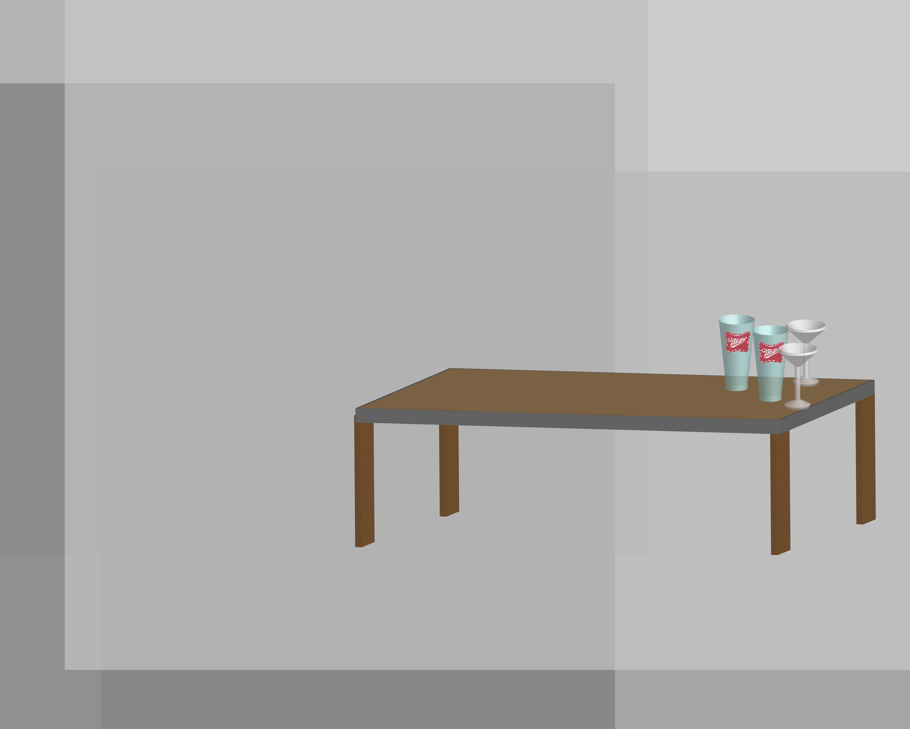
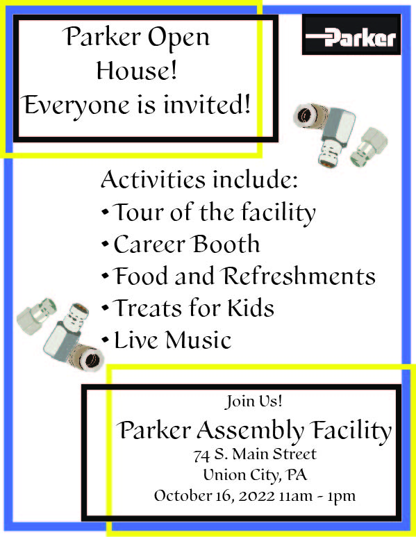
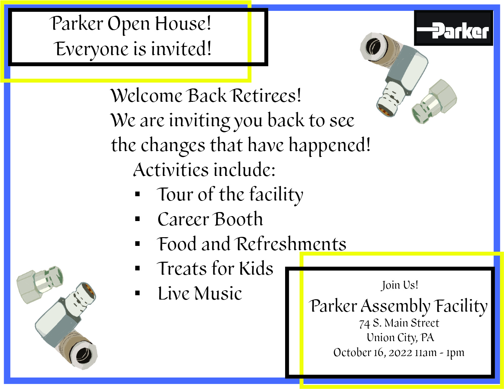

Addobe Photoshop


This is not my best project I could've done, but it was my fist time testing it all out an getting the hang of everything.
You can make something within illustrator and minipulate the layers you created to make them move around and make your project come to life. Then you can put your project into Premiere and add music along with a VR effectt to your project. You can is that in this project right here!
This is a video I took and edited at my house of my dog running around the woods and how she acts. I choose to follow her for video content because she is one cute and two more interesting to most then anything else I could ever come up with. The music you hear in it is used from a website called Bensound.com I use this site because music royalties are free as long as they are mentioned.
With this program I have made images and changed them in adobe after Efffects to Adobe Premiere. I have made 3D looking projects, announcments, to PSA's.
This is a project which I had to use and make a 3D objects. So I made a table with glasses on top of it. I added the multiple squares of grey in the back to give it a little more charater then what it had at the time with just a white background. We where also learning how to use whitespace to our advantage as well.

We had to make a flyer on something that explains what is happening in this world with a way to change it and make it better. So I did mine on pollution and solar technology.
 I made this for my job to announce the open house happening at the assembly plant. I made the flyer first and then was asked to make a card that can be sent out to people that had previously worker there and retired. So the second one is the card.
This is the project I did in DIGIT 110 with two other people. I enjoyed working of this project for trying to figure out what words she meant to where she drew random pictures and had blank spots. It took time and a lot of editing in the XML and we did not take enough time on the CSS sadly. All in all though the project got done and has interesting effects with the XSLT where you hover over the word that is spelt wrong and you can see what the real word was suppose to be.